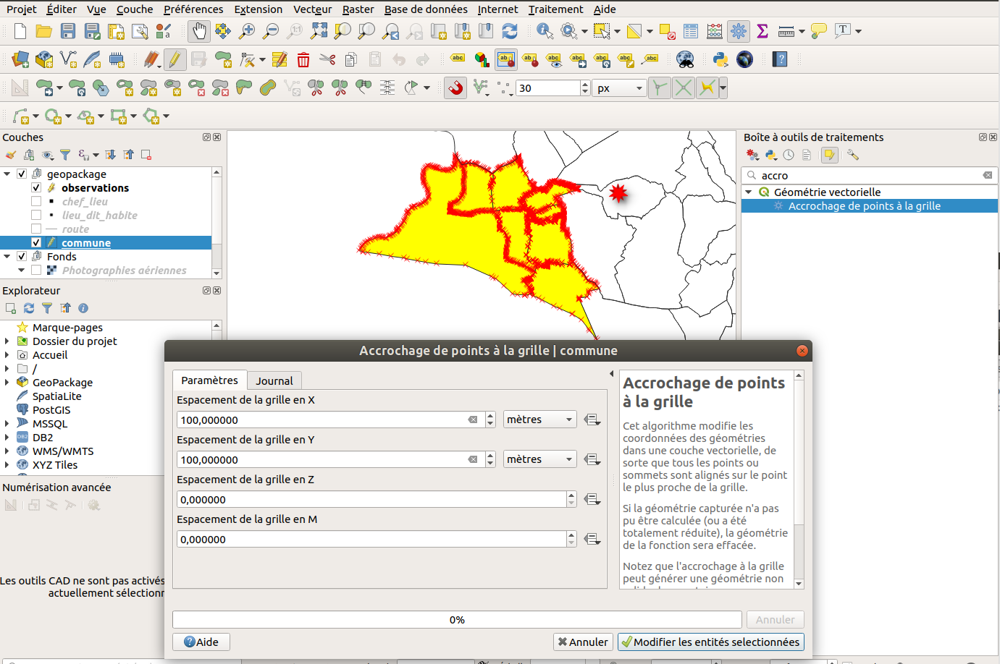

Processing
Outil d'analyse vecteur
- QGIS propose de nombreux algorithmes d'analyse spatiale.
- Nous allons utiliser l'algorithme
Extraire par localisation/Sélection par localisationafin de récupérer seulement les troncons de route quiintersectentla commune. - Nous souhaitons obtenir une couche des départements Français à l'aide de la couche des communes. Il s'agit d'un regroupement.
- Que remarque-t-on sur la table attributaire ?
- Nous allons utiliser l'algorithme
La modification par algorithme de traitement
QGIS permet maintenant de modifier directement des géométries sélectionnées à partir d'un algorithme de traitement. Pour cela:
- Ouvrir la boîte à outils via le menu Traitement / Boîte à outils
- Sélectionner un ou plusieurs objets
- Chercher un algorithme dans le panneau Boîte à outils de traitement , par exemple Accrochage de points à la grille
- Activer le bouton jaune Editer les entités sur place
- Lancer l'algorithme avec valeur
500en X et Y et lancer pour tester le traitement. - On peut toujours revenir en arrière via CTRL+Z
